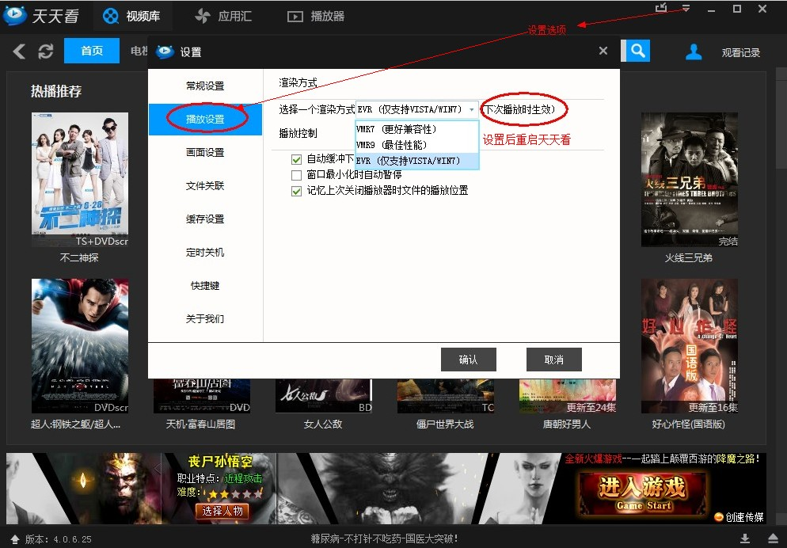
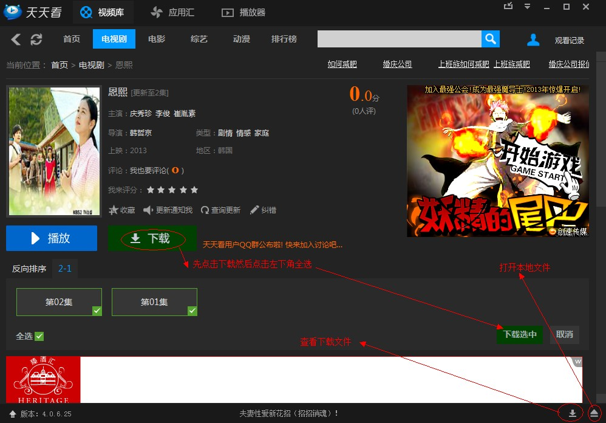
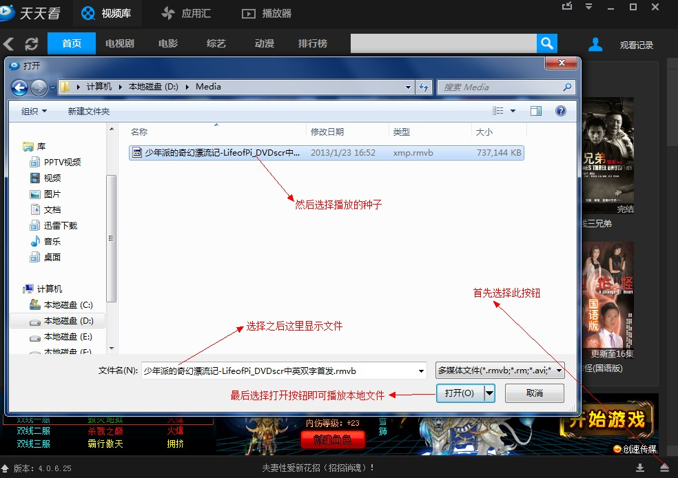
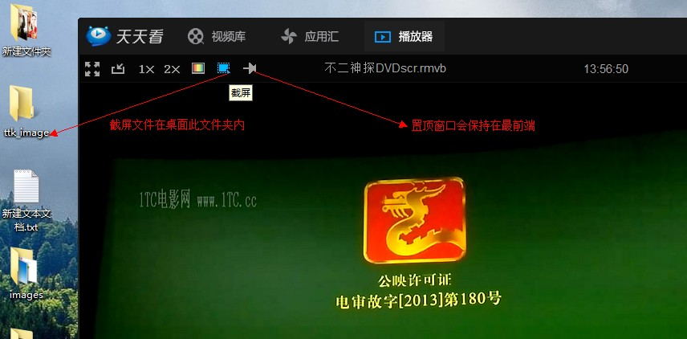

奇品播放器
首页
更新历史
使用手册
产品简介
手机客户端
奇品影音播放器使用手册
常见问题
反馈
1、奇品播放器无法播放，呈现断网状态，无法连接到网络,怎么办？
解决途径：
1、因为网络延迟，需要几秒的时间用来加载视频，请等待加载完成。
2、若是长时间无法加载，请先检查电脑网络状况，查看电脑是否有在下载其他文件，占用带宽。
3、用浏览器打开其他网站，看是否可以连接，测速宽带的速度。
4、正常播放影片时突然画面卡着不动，一直在加载中，请暂停播放影片，等待1分钟左右再继续观看，这是因为网速过慢造成的，您可以提高宽带网速来避免这种情况发生。
2、播放视频时出现声音和画面不同步对齐，或者有声音无画面、有画面没声音，怎么办？
解决途径：
1、调整视频渲染方式，打开播放器的播放设置，依次选择WMR7、WMR9、EVR进行测试，一般可以解决，如下图： 
2、如果以上方法无效，请卸载奇品影音重新安装一次
3、如果重装后依然无法解决，很可能是电脑系统问题。
3、播放电影时自动暂停，无法下载电影，本地视频文件可以播放，怎么办？
解决途径：
1、请先检查存储播放器缓存的磁盘空间剩余大小，如果磁盘的剩余空间过小，请在磁盘里删除不必要的垃圾文件，同时删除media文件夹里面的文件
2、如果不删除原磁盘缓冲文件，可以将播放器的缓冲目录设置在其他更大的磁盘中
4、无法播放视频，提示不支持该视频的格式，怎么办？
解决途径：
1、直接用播放器下载该视频文件，然后在本地使用其他播放器播放该视频即可
2、将该情况反馈给奇品影音的客服人员
5、播放影片是声音比画面快，或者画面比声音快
解决途径：
1、奇品影音的版本V5.6以上有调节视频声音延迟与提前的功能，请升级使用。
6、奇品影音播放器出现程序停止响应怎么办？
解决途径：
1、一般在电脑CPU使用率超过95%以上，播放器才会出现卡死现象，可以打开任务管理器关闭奇品影音，并关闭一些占用CPU大量资源的程序，然后重新开启奇品影音。
7、播放器边播边下，速度很慢，容易卡住缓冲，怎么办？
解决途径：
1、p2p原理，因为观看该影片的人很少，下载速度就很慢，可以等几个小时再来下载
2、可以挂机下载该影片，等待下载完成再在本地观看
8、奇品播放器播放影片时，有许多数据上传造成网速卡怎么办
解决途径：
1、因为奇品影音基于P2P协议，所有会有数据上传。
2、可以使用流量防火墙软件进行上传网速限制。
9、无法播放影片，一直在缓冲
解决途径：
1、这是网速不够的关系，建议重新启动调制解调器。
10、播放影片同时听到广东话和普通话
解决途径：
1、在播放设置中选择左声道或者右声道
11、无法播放影片的几种常规解决途径
解决途径：
1.检查播放器的缓存磁盘，如果磁盘空间小于3G，请删除垃圾文件。
2.如果磁盘空间充足，可能是奇品影音缓存文件太多，请在播放器更改缓存存储的路径。
12、播放器不显示影片库
解决途径：
1、点击播放器右上角的刷新按钮
13、离线下载怎么用？
使用方法：
1、打开影片，右键选择离线下载，如下图： 
14、定时关机、播完完成自动关机怎么用？
使用办法：
1、点击播放器界面右上角的菜单按钮，选择播放设置，选择播放计划，在播放计划里面设置，如图。
15、如何使用奇品影音播放器播放本地视频文件？
使用方法：
1、直接把要播放的文件拖进奇品播放器中即可播放。
2、点击播放器菜单，点击打开文件，再找到要播放的文件，双击就能播放。 
16、如何截屏
使用方法：
1、请结合下图进行截屏操作： 
17、影片的缩略图、情节介绍无法显示怎么办
解决方法：
1、重新启动奇品播放器
2、打开IE浏览器，在工具菜单选择Internet选项，安全设置选择为中。
Copyright
奇品播放器
版权所有 ICP证：浙B1-201487138 2014-2015
奇品影音